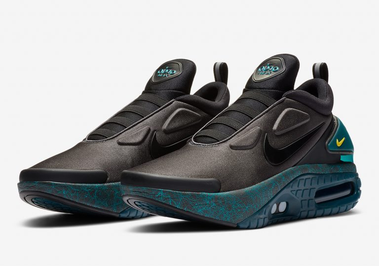
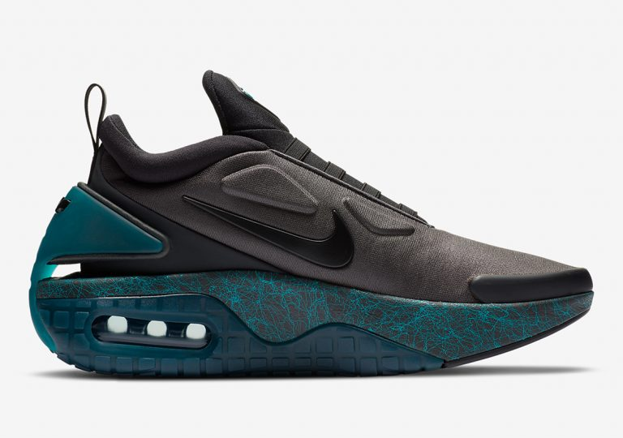
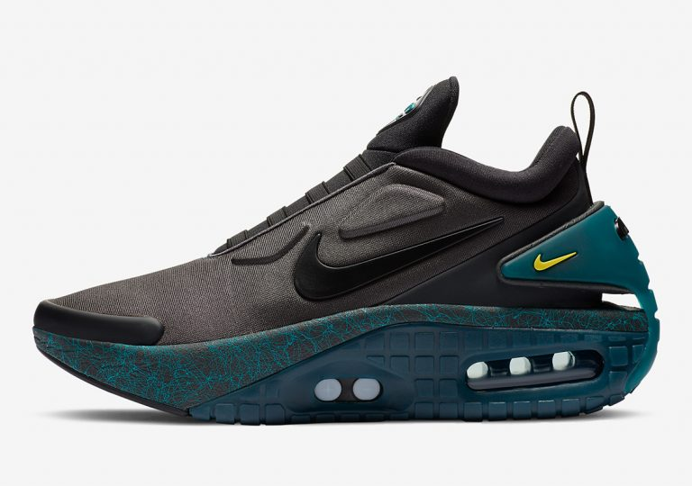
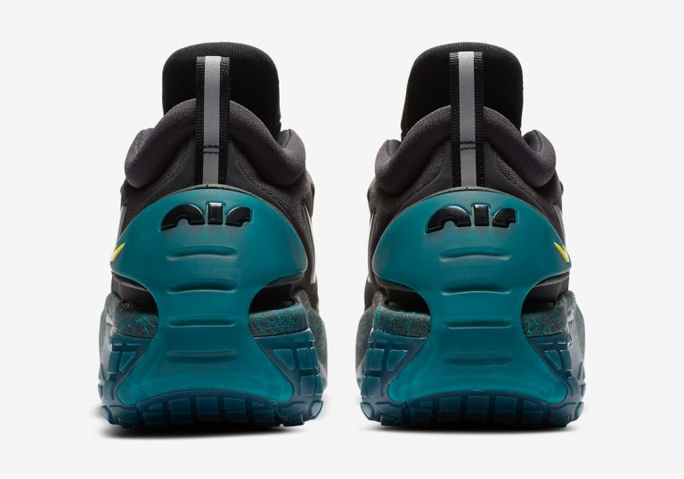

Ngày phát hành : 18/6
Giá bán lẻ tham khảo: 400 USD
Trong tháng 6 này, Nike tiếp tục thay áo mới cho đôi giày công nghệ cao nhất tính đến hiện tại là Nike Adapt Auto Max “Anthracite”. Thân giày được tạo hình với các đường nét không chút rườm rà.
Một vài hình khối dạng tam giác được làm nổi trên mu bàn chân. Đó thực chất là những kết cấu tham gia công đoạn thắt – nhả dây giày tự động.
Đôi giày thể thao chia ra hai mảng màu sắc tương phản với phần thân được bao phủ bởi màu đen, trong khi đó, phần đế giày phía dưới sử dụng tông màu màu xanh nổi bật với thiết kế hầm hố.

Midsole được cấu tạo từ hai phần riêng biệt: đế EVA foam màu xám cùng những hình vẽ màu xanh phá cách, với phần bên ngoài là chất liệu cao su khoác lên mình sắc xanh cá tính bao quanh phần đệm cũng như cửa sổ Air Max ở giữa.
 Quay lại
Mẫu giầy 2
.Mẫu giầy 3
.Mẫu giầy 4
.Mẫu giầy 5
.